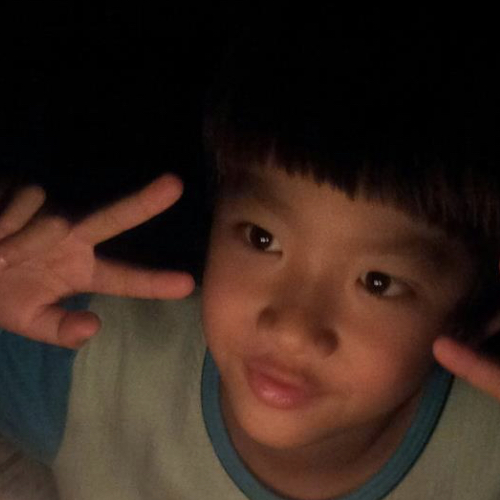
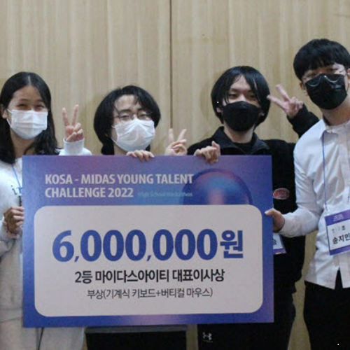
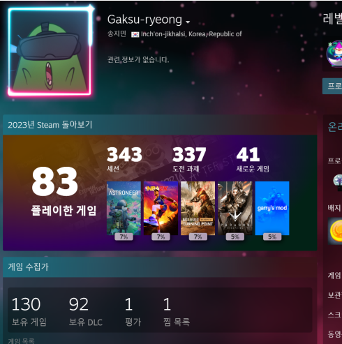
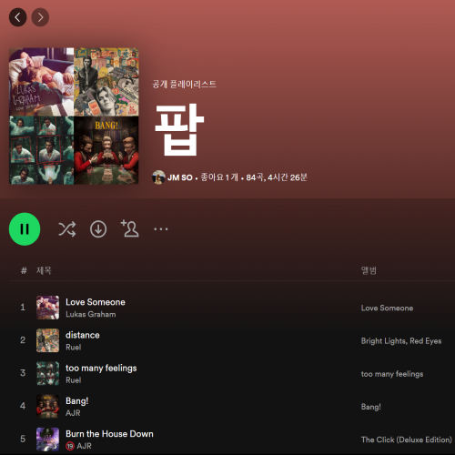
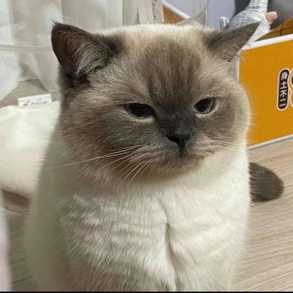

나는 누구일까요?🧐
안녕하세요 저는 아기사자 송지민입니다🦁
이번 멋쟁이사자처럼 12기 백엔드로 지원하게 되었습니다!
저는 인천 싸나이로 인천에서 태어나 인천에서 자란 토박이며
다들 마계냐고 여쭤보시지만 몇몇 곳만 그렇습니다..
제 MBTI는 INTP로 소심하지만 다들 외향인으로 오해해요..
먼저 말 걸어주시면 금방 친해질 자신 있습니다!! 도와주세요!!


개발 경험🖥️
저는 중학교 2학년 때부터 Python으로 개발을 시작했습니다!
경험해본 언어는 Python, Java, C, C#, Kotlin이며
Python 외엔 문법만 아는 정도입니다..ㅠㅠ
호기심이 많은 편이라 찍먹을 많이 해서 결과물이 없는 편이며
웹, 앱, 인공지능, 정보보안, 게임개발 조금씩 해봤습니다!!
왼쪽은 전국 마이스터, 특성화 해커톤인데
앱으로 2등 수상한 사진입니다! 인생 업적이라 올려봤어요..ㅎ
아직 많이 부족하기에 같이 성장했으면 좋겠습니다!!😊
나의 취미는?🎮
요즘은 많이 안 하지만 본래 제 취미는 게임입니다!
라이엇, 옵치, 마크 등 이것저것 다양한 게임을 즐기며
특히나 스팀게임을 즐기는 편이라 100개 넘게 소유 중입니다!
언제나 게임을 즐길 수 있으니 같이 하자고 말해주세요🥺
대신 노트북밖에 없어서 피시방을 가야됩니다😅😅
그 외에도 영화보기, 맛있는 거 먹기도 제 취미라
함께하고 싶으시다면 편하게 말해주세요!


음악 취향?🎵
저는 평소에 음악을 듣고 노래를 부르는 걸 좋아합니다!
보통 들을 땐 분위기 좋은 팝송을 주로 들으며
부를 땐 힙합이나 인디뮤직 또는 발라드 위주로 부릅니다!
제가 노래를 막 잘 부르는 건 아니지만!! 나쁘지 않게 합니다😎
저랑 노래방 가시면 맛깔나게 곡 뽑아드릴게요 히히 🤗😊
그리고 저는 스포티파이로 노래를 듣습니다! 감성이 있달까..?
제 추천곡은 slchld - camellia입니다😎
제 플레이리스트 공유하겠습니다! 아래 클릭해주세요!!
가보쟈~
끝마치며..🦁
어떤 페이지를 만드는 게 좋을까 정말 고민을 많이 했는데
디자인은 심플하게 해보고 사용자가 직접 개입하는 부분이
많았으면 좋겠다 생각해서 보기엔 조금 불편할 수 있지만
hover를 좀 이용하고 media로 반응형 웹으로 바꿨습니다!
상단바 좌측 글씨도 막 호로로록 커질 거예요 ㅎㅎ
반응형이라 크기에 따라 조금씩 다르니 한 번 해보세요!
모바일에선 hover가 작동이 안 돼서 아무것도 없을 거예요..
바쁘지 않으시다면 랩탑이나 데탑 환경에서 한 번 봐주세요!
이상 읽어주셔서 감사하며 멋사 12기 화이팅!!🔥🦁🔥
